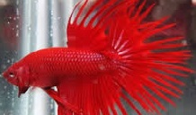
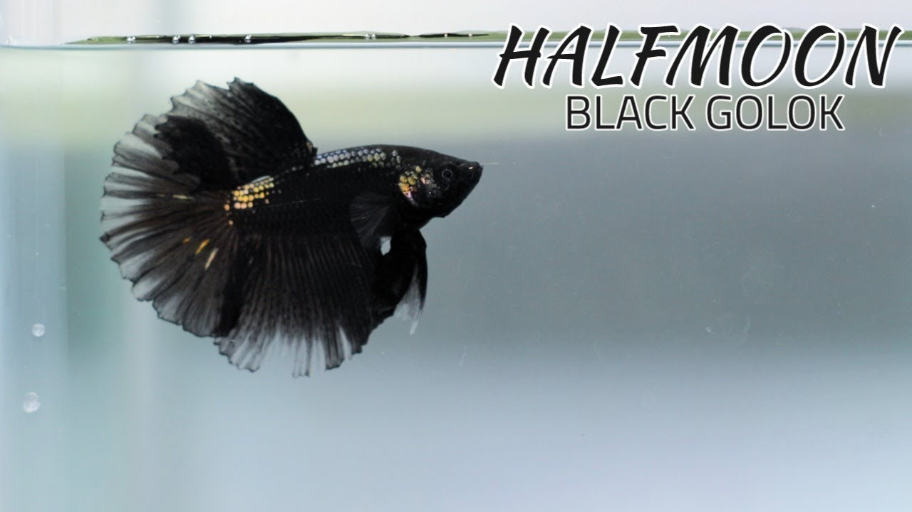
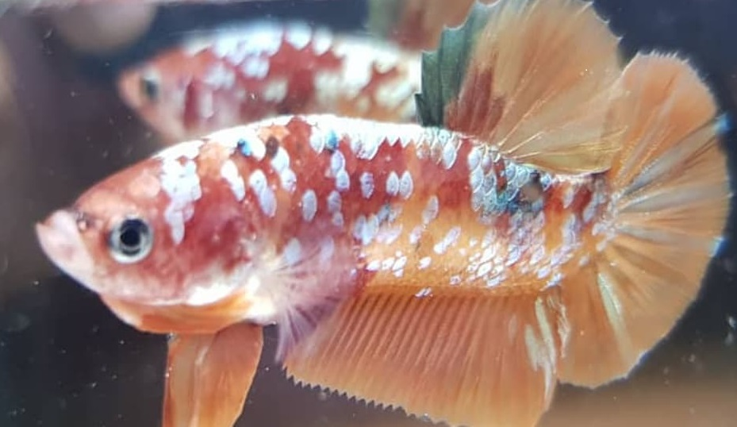
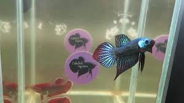

Cupang Serit atau Crowntail, merupakan Cupang hias asli silangan dari Indonesia. Jenis Cupang ini memiliki sirip yang khas seperti sisir,atau bahkan terlihat seperti layar yang sobek. Crowntail ‘lahir’ pada tahun 1998 dan menjadi booming pada tahun 2000an. Awal lahirnya jenis ini banyak pihak yang skeptis dan menganggap jenis ini hanya penyimpangan semata. Jenis Cupang inipun akhirnya hanya jadi “warga kelas dua” dalam setiap kontes Cupang. Cupang Serit mempunyai beberapa varian menurut bentuk seritnya. 1. Serit tunggal/Combtaill, Cupang Serit tunggal ialah ikan-ikan tipe awal yang sekarang sudah jarang sekali kelihatan. Serit ikan ini hanya berjumlah satu-satu seperti Serit double yang tidak pecah .2. Serit Dua/Double Ray Crowntail, varian ini yang paling umum kita jumpai dimasa kini baik sebagai peliharaan maupun di arena kontes, bentuk double ray-nya ada yang menyerupai huruf V dan ada yang menyerupai balok. Double Ray adalah ikan Serit yang mempunyai susunan tulang primary (tulang utama yg keluar dari pangkal ekor dan menopang tulang-tulang berikutnya) dan pecahan ray secondary (percabangan kedua yang keluar dari tulang utama) pada ekornya. 3. Serit Empat/Double Double Ray (DDR) dan Serit Delapan/Double Double Double Ray. Cupang Serit Empat mempunyai susunan tulang primary dan pecahan ray secondary, serta pecahan ray tertiary pada ekornya. Sedangkan Serit Delapan mempunyai mempunyai susunan tulang-tulang primary dan pecahan ray secondary, pecahan ray tertiary (percabangan ketiga yang keluar dari percabangan kedua) hingga pecahan ray quartenary (percabangan keempat yg keluar dari percabangan ketiga ) pada ekornya. 4. Serit Balon, ini adalah tipe Serit yang mempunyai selaput ekor berlebih antar spasi ray hingga jika sedang berenang terlihat menggelembung menyerupai balon. 5. King Crowntail dan Cross Ray, sebenarnya ikan tipe ini struktur tulangnya sama dengan Double Ray/Serit Dua, namun pada ujung-ujung ray atau serit-nya melengkung dan menyilang antar tulangan spasi. Perbedaan antara King Crowntail dan Cross Ray adalah jika pada King Crowntail tulangnnya melengkung dan saling menyilang, sedangkan pada Cross Ray tulangannya lurus tidak melengkung namun saling-silang juga antara tulang spasinya. Biasanya ikan Cross Ray mempunyai bentuk balok yang besar dan spasinya cenderung rapat. Nama King Crowntail terinspirasi dari bentuk mahkota yang modelnya saling-silang antar mahkotanya.
Kecantikan ikan ini tidak hanya terlihat di bagian ekor dan siripnya saja, namun juga terdapat dihampir keseluruhan tubuh ikan. Selain itu, gerakan ikan ini juga terlihat anggun. Keindahan ikan ini juga terdapat pada varian ikan plakat, yaitu ikan cupang plakat halfmoon. Hal yang membedakan adalah ukuran ekor ikan cupang plakat halfmoon lebih pendek daripada ikan ini. Setelah berkembang di Amerika Serikat, ikan ini juga dikembangkan di Perancis. Karena ikan ini sudah mulai populer di kalangan pecinta ikan cupang, ikan ini diikutsertakan dalam sebuah kontes cupang internasional, yaitu IBC. Namun, dalam kontes tersebut, IBC masih belum mengakui kehadiran ikan ini meski ikan ini memiliki segudang keistemawaan dan para juri IBC belum memberikan kemenangan pada ikan ini. Penilaian IBC tersebut sangat berbeda dengan respon masyarakat mengenai ikan cupang ini. Sejak diikutsertakan dalam kontes IBC di Alabama, ikan ini semakin terkenal. Hal ini diperlihatkan dengan semakin menyebarnya ikan ini di kawasan Eropa lainnya, seperti Swiss. (Baca juga: Ikan Koi) Karena ikan ini masih di pandang sebelah mata di dalam kontes IBC, para breeder dari Amerika Serikat, Swiss, dan Perancis membentuk organisasi baru yang dinamakan International Betta Splendens Club dengan tujuan untuk mewadahi kontes ikan ini dari berbagai belahan dunia. Dari organisasi tersebut menjadikan ikan ini di kenal di seluruh dunia, termasuk di Asia Tenggara.
ikan ini diperkenalkan di Indonesia dengan tujuan untuk melawan boomingnya ikan Louhan. Semenjak itu, ikan ini semakin dikenal dan diminati oleh banyak orang karena tampilannya yang jauh lebih indah dan menarik. Saat ini, ikan yang sudah beredar terdiri dari empat jenis, antara lain: Plakat Fancy Jenis ini merupakan salah satu jenis cupang yang memiliki banyak corak warna. Corak warna yang dimiliki paling sedikit sekitar 3 corak warna yang terdapat dibagian tubuh, ekor dan sirip ikan. Plakat Koi Jenis ini merupakan salah satu jenis cupang yang memiliki corak warna seperti ikan koi. Oleh karena itu, jenis ikan cupang ini dinamakan plakat Koi. Plakat Giant Jenis ini merupakan salah satu jenis cupang yang memiliki ukuran paling besar diantara ikan cupang lainnya. Panjang tubuh ikan ini beisa mencapai 15 cm. Ikan Cupang Plakat Halfmoon Jenis ini merupakan salah satu jenis cupang yang tertua di Indonesia dibandingkan dengan ketiga jenis ikan cupang lainnya. Sejarah Ikan Cupang Plakat Dalam perkembangannya, ikan ini dikawinkan dengan ikan cupang Halfmoon. Hasil perkawinan tersebut menghasilkan ikan yang memiliki bentuk ekor seperti Halfmoon, namun ekornya memiliki ukuran yang lebih pendek daripada ikan cupang Halfmoon. Sehingga ikan cupang jenis ini dinamakan Plakat Halfmoon.Ada juga ikan yang sengaja dikembangkan dengan tujuan agar ikan cupang memiliki tubuh yang besar dan menarik. Lahirlah ikan cupang Plakat yang memiliki ukuran jauh lebih besar dibandingkan ikan cupang Plakat lainnya dan tetap memiliki ciri khas ikan ini.Ikan ini dinamakan Plakat Giant. Pada pertama kali, ikan ini diperkenalkan di sebuah acara pameran yaitu Jakarta International Betta Show 2007 di Lapangan Banteng, Jakarta Pusat. Ikan cupang ini dihargai dengan harga yang cukup fantastis yakni US$1000 atau setara dengan Rp10.000.000,00 pada saat ini.
Ikan cupang hias yang ada saat ini memiliki beragam jenis dan warna yang memikat hati. Namun demikian, ikan-ikan ini tidak akan dijumpai di alam liar yang biasa menjadi habitat ikan cupang. Kondisi ini terjadi karena sebagian ikan cupang hias yang ada sekarang, merupakan hasil persilangan berbagai jenis cupang yang telah melalui proses seleksi yang cukup panjang. Menurut data yang ada, di seluruh penjuru dunia ada lebih dari 60 jenis spesies ikan cupang dengan berbagai macam variasi warna dan bentuk ekor. Namun demikian, beberapa jenis ini yang cukup banyak diminati dan mendapat tempat di hati para pecintanya. Betta Splendens ini habitat aslinya berasal dari Thailand dan bisa hidup hingga 3 tahun. Ukuran jantan bisa mencapai sekitar 7-8 cm. Mereka dikenal akan berkelahi bahkan membunuh jantan lain. Tetapi umumnya mereka tidak terlalu agresif terhadap ikan jenis lain jika disatukan dalam satu akuarium. Ikan jenis ini selain menjadi cupang hias juga sering dijadikan cupang aduan. Betta Bellica ini aslinya berasal dari Malaysia dan dikenal dengan nama ikan betah. Dibanding betta splendens ikan ini memiliki sirip yang lebih pendek dengan sirip ekor berbentuk hati. Di alam liar ketika makan ikan cupang ini kadang melompat dari air untuk menangkap mangsanya. Jantan memiliki ukuran badan lebih besar dan lebih berwarna dibandingkan betinanya. Ukuran standar ikan ini 8-9 cm